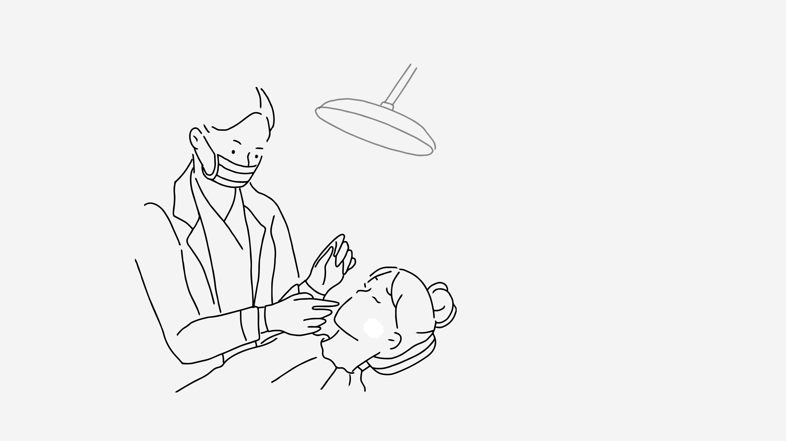
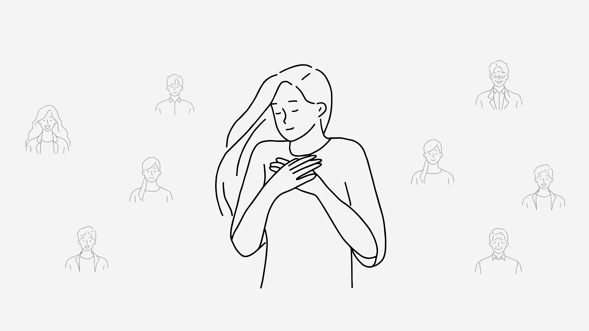

Bridging the Gap Between
Clinic & At-home Wound Care
Amber is diagnosed with skin cancer and undergoes Mohs surgery at the clinic, where layers of skin are removed until the cancer is fully cleared.

Amber is diagnosed with skin cancer and undergoes Mohs surgery at the clinic, where layers of skin are removed until the cancer is fully cleared.
Upon successful completion of the surgery, the nurse applies the pressure dressing, hands over the instruction sheets, and all the necessary materials, taking a moment to walk Amber through the information she needs to ensure proper healing.

Two days after her surgery, Amber has to complete her first dressing change at home. After cautiously taking a shower, worried about getting the wound wet, she stands in front of the mirror, trying to remember the nurse's instructions. Even though the nurse walked her through the instructions at the clinic, this is her first time doing it on her own, and it was very time-consuming.
One day, just when Amber thought everything was progressing well, she was surprised to see blood seeping from her wound. A sudden wave of nervousness and distress washed over her as questions flooded her mind: "What is happening? Is the wound infected?”
About twenty minutes later, the bleeding was still going on. Filled with uncertainty and not knowing what to do next, Amber remembered the phone number the nurse had given her. With all her questions and concerns, she decided to call the clinic for help.
The medical team reassured her and told her that the bleeding is expected. They provided her with useful advice and scheduled an appointment to check the wound.

However, this sudden incident increased her anxiety throughout the rest of her wound care journey. Questions continued to fill her mind: When will this end? Is it healing properly? Will the cancer come back? Has the cancer truly been removed?
